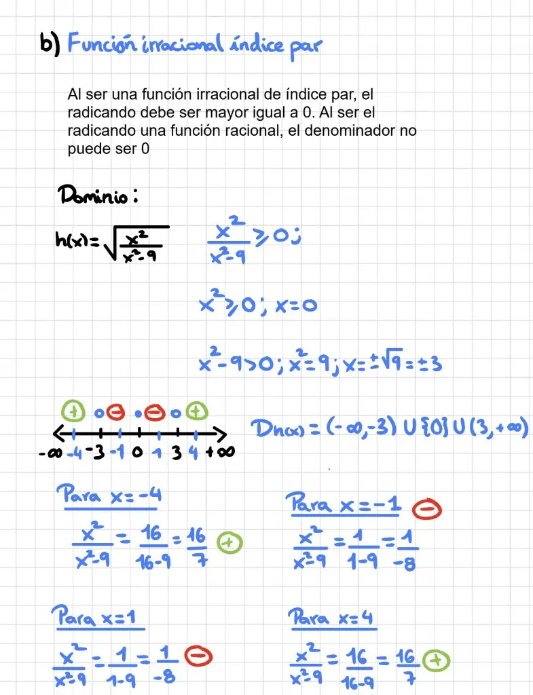
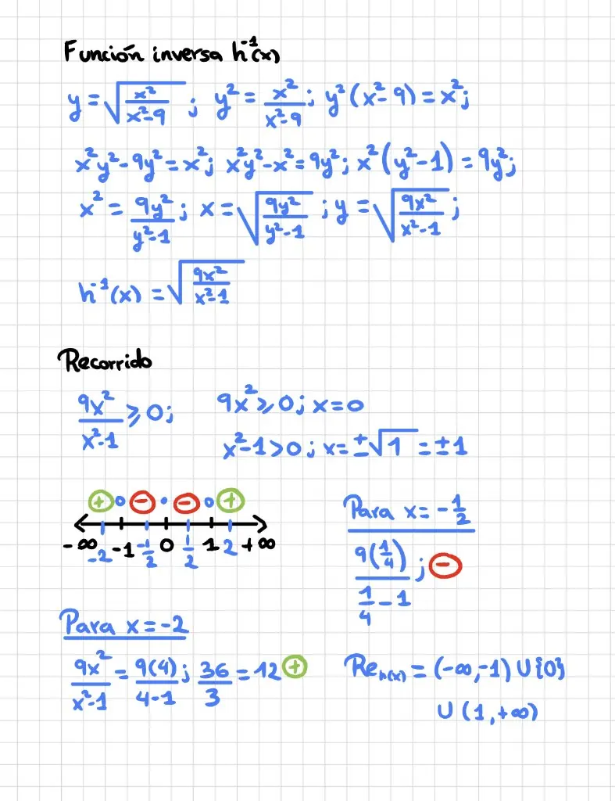

Palma de Mallorca · Online · desde 10 €/h por alumno
Clases de Matemáticas para ESO y Bachillerato
Aprende a razonar y a resolver problemas con autonomía. Metodología práctica y visual con pizarra digital interactiva y apuntes en PDF tras cada sesión.
+34 637 621 315
- Formación
- Grado UIB en Ingeniería Informática
- Experiencia
- 3 años de clases particulares activas
- Centro
- Antiguo alumno del Sant Antoni Abat
- Material
- Apuntes en PDF con pizarra digital Goodnotes
Aprender a razonar, no a memorizar
Las matemáticas no son una lista de recetas fijas. Mi prioridad es que el estudiante entienda el origen lógico de cada concepto para resolver cualquier problema con criterio y seguridad ante el folio en blanco.
-
Diagnóstico de lagunas
Muchas dificultades en el curso actual vienen de dudas arrastradas de cursos previos (fracciones, signos, jerarquía de operaciones o despeje de incógnitas). Localizamos con precisión el origen del bloqueo y reconstruimos la base con total solidez.
ResultadoBase conceptual afianzada
-
Razonamiento guiado
No doy las soluciones masticadas. Formulo preguntas estratégicas para que el estudiante deduzca los pasos lógicos por sí mismo, gane agilidad mental y sea capaz de defender el desarrollo de un examen sin depender de nadie.
ResultadoAutonomía y resolución propia
-
Papel en casa y Goodnotes online
En clases presenciales trabajamos íntegramente a papel sobre el cuaderno del estudiante para asegurar orden, limpieza y soltura ante el examen real. En clases online usamos una tableta gráfica Huion Inspiroy 2M conectada al ordenador con Goodnotes, y el alumno recibe el PDF al terminar.
ResultadoApuntes claros y ordenados
Ver muestra de apuntes
Muestra real de apuntes
Pizarra digital generada en tiempo real durante la clase. Material original elaborado por Daniel Casado.
Online: pizarra digital con tableta gráfica Huion Inspiroy 2M; entrega de archivo PDF al terminar.
Presencial: trabajo 100% a mano sobre papel en el cuaderno del alumno para preparar exámenes reales.


Modalidades y tarifas
Sin matrícula ni permanencia obligatoria. Escoge entre el apoyo directo a domicilio en Palma o la comodidad y flexibilidad de las sesiones online.
Individual
Sesiones para un solo alumno, con ritmo individualizado para afianzar cada paso.
-
Presencial a domicilio
15 €/ hora
Atención directa en tu propio hogar con el material y temario del colegio o instituto.
- Desplazamiento incluido en Palma y zonas acordadas.
- Seguimiento directo del libro, deberes y exámenes del centro.
- Ritmo 100% individualizado para afianzar cada paso.
-
Online interactiva
13 €/ hora
Sesión en tiempo real con pizarra digital compartida (tableta gráfica Huion Inspiroy 2M), audio nítido y cero desplazamientos.
- Pizarra Goodnotes en vivo con tableta gráfica para desarrollos claros.
- Envío inmediato del PDF con los desarrollos al finalizar.
- Máxima flexibilidad horaria para repasar antes de exámenes.
Modalidad Dúo: estudia con un compañero
Si compartes clase con un amigo o compañero del mismo curso y temario, las sesiones resultan dinámicas, participativas y la tarifa por alumno se reduce.
-
Presencial dúo
12 €/ h por alumno
Calcular cuota mensual -
Online dúo
10 €/ h por alumno
Calcular cuota mensual
Estima tu cuota mensual
Elige nivel, modalidad y frecuencia. El total se actualiza al momento y puedes enviar la consulta por WhatsApp ya redactada.
- Modalidad
- Presencial a Domicilio
- Frecuencia
- 2 días / semana (1 h por clase)
- Horas semanales
- 2 horas / semana
- Inversión semanal
- 30,00 € / semana
Mensaje redactado automáticamente«¡Hola Daniel! He visto tu web de clases de matemáticas. Me gustaría consultar disponibilidad para 3º de ESO en modalidad Presencial a Domicilio, con 2 días a la semana (1h por sesión, total 2h/semana; estimado mensual: 120,00€). ¿Qué horarios tendrías libres?»
Sin permanencia ni matrícula.
Preguntas frecuentes
Claridad desde el primer momento en horarios, desplazamientos y metodología.
En las clases online nos conectamos por videollamada con audio nítido y tableta gráfica Huion Inspiroy 2M conectada al ordenador con Goodnotes en directo, visualizando la resolución paso a paso y enviando el PDF nada más terminar. En las clases presenciales a domicilio trabajamos íntegramente a papel sobre el cuaderno del estudiante para consolidar el orden, la limpieza de escritura y la soltura de cara a los exámenes presenciales.
No. El desplazamiento está 100% incluido en la tarifa de 15 €/h dentro de Palma y zonas acordadas. No hay cargos ocultos ni sorpresas en el precio acordado.
No hay matrícula ni permanencia obligatoria. Las clases se programan de mutuo acuerdo y puedes pausar o finalizar el servicio cuando los objetivos académicos se hayan alcanzado con éxito.
Avisando con antelación suficiente, reprogramamos la clase en otro hueco disponible durante la semana o el fin de semana sin ningún inconveniente ni penalización.
Si dos alumnos del mismo curso o centro escolar reciben la clase juntos, la tarifa por alumno se reduce a 12 €/h en presencial o 10 €/h en online. Las sesiones resultan muy dinámicas al resolver dudas compartidas del mismo temario.
Consulta horarios y reserva tu plaza
Escríbeme por WhatsApp indicando el curso actual del alumno, sus objetivos y tu preferencia de horarios. Te responderé directamente para coordinar la primera sesión.
+34 637 621 315
Escribir por WhatsApp- Zona
- Palma de MallorcaClases online en directo
- Tarifas (€/hora; dúo, por alumno)
- Presencial a domicilio 15 € Online interactiva 13 € Dúo presencial 12 € Dúo online 10 €
- Atención
- Directa, sin intermediariosSin matrícula ni permanencia